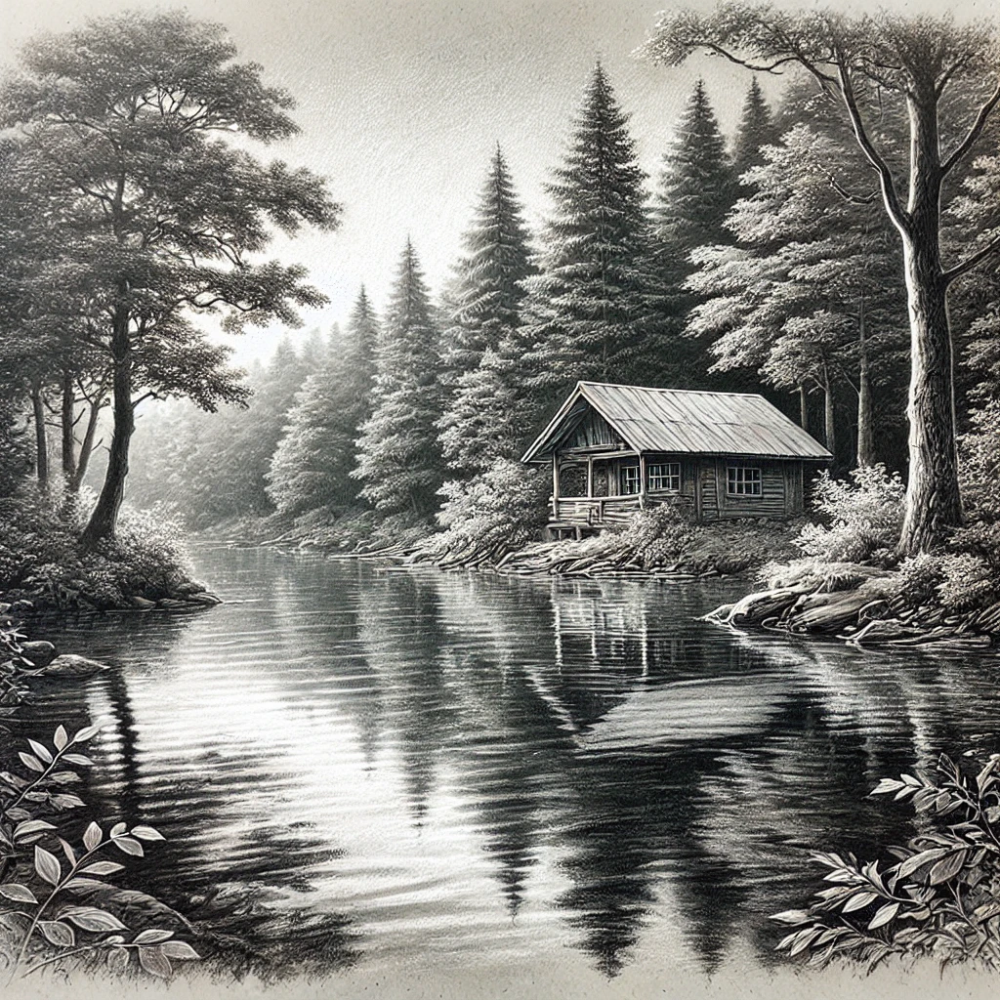
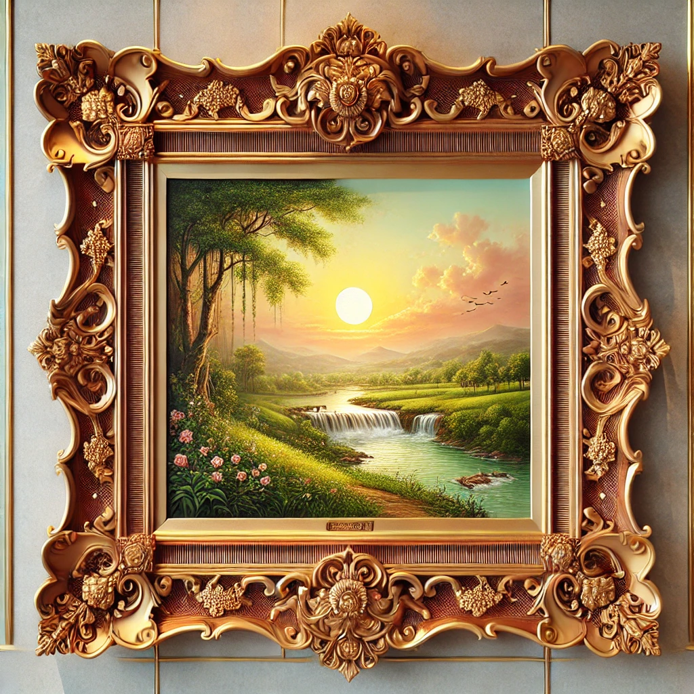
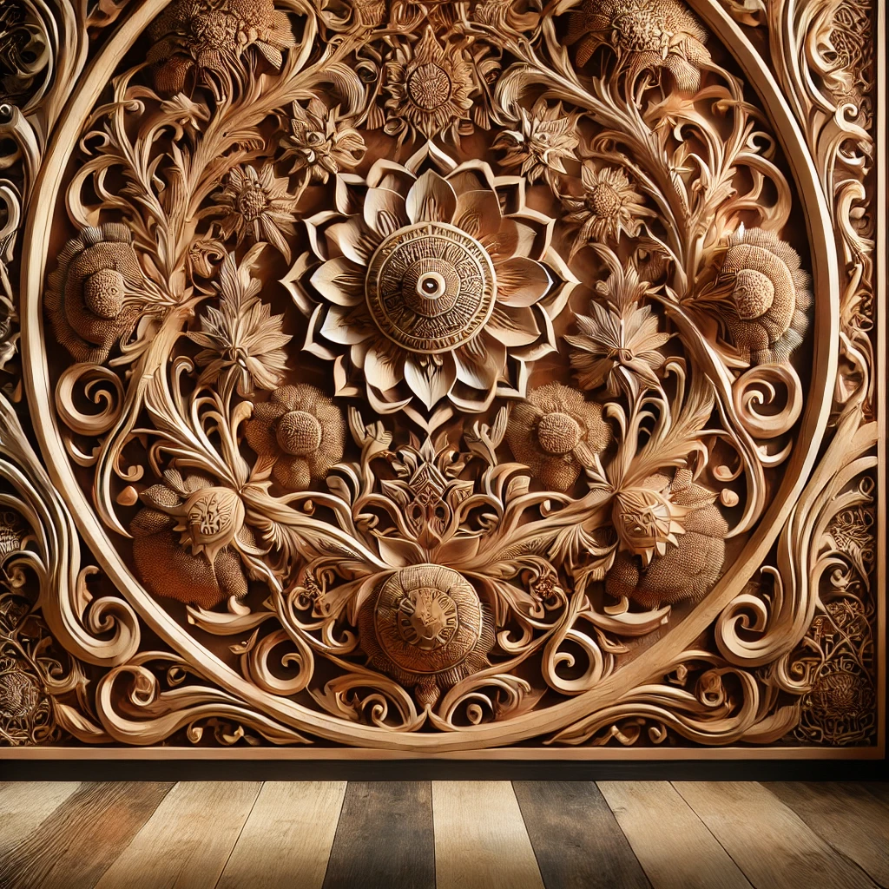

Our Products

Pencil Artwork
Unique and detailed pencil drawings.

Picture Frame
Handcrafted frames for your memories.

Stunning Craft Works
Lamps, fountains, and vases made from waste.

Woodworks
Sofa chairs, wardrobes, and more.
Follow Us